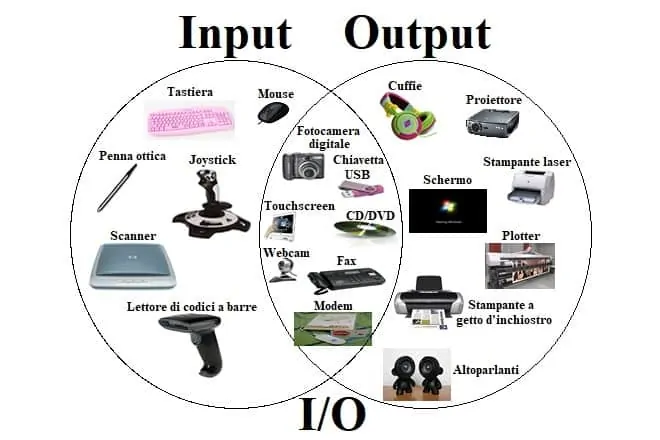
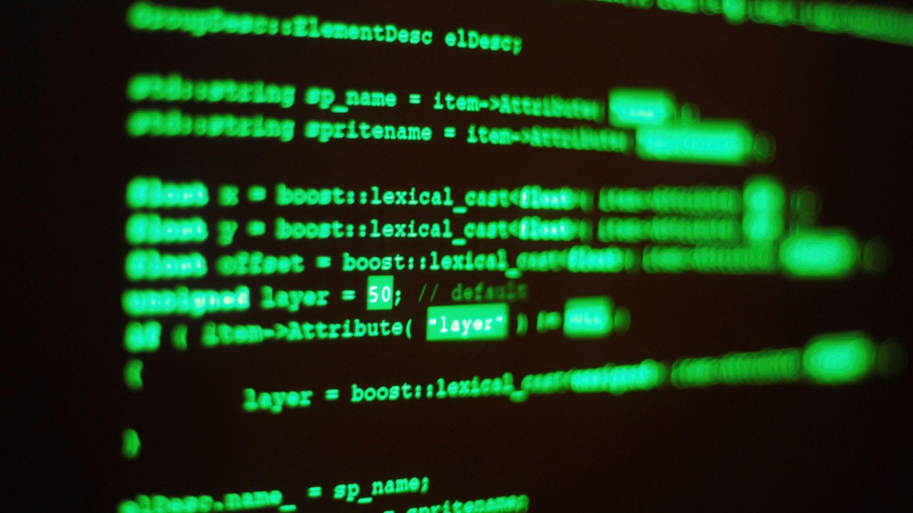
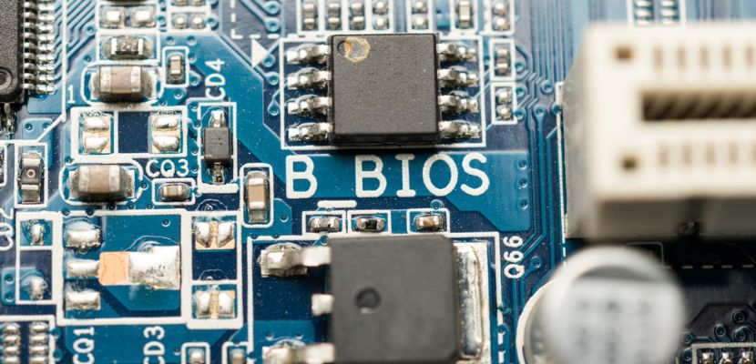

hardware e software:
Hardware
Software
Hardware e Software: una Sinergia Essenziale
L'informatica moderna si fonda su due elementi,
chiave: hardware e software. Questi due componenti,
pur essendo distinti, collaborano in modo sinergico
per creare l’infrastruttura che sostiene i dispositivi
digitali e le tecnologie che utilizziamo ogni giorno.
Hardware

1.Hardware : La Base Fisica
L’hardware comprende tutti i componenti
fisici di un sistema informatico. Include
tutto ciò che è tangibile, come il processore (CPU)
, la memoria RAM, il disco rigido, la scheda grafica
e i dispositivi di input/output come tastiere, monitor
e stampanti.
L’hardware si suddivide in diverse categorie:
Dispositivi di input: come tastiere, mouse e
scanner, che consentono agli utenti di inserire dati.
Unità di elaborazione centrale (CPU): il cervello
del computer, responsabile dell'esecuzione delle istruzioni
dei programmi.
Memorie: sia RAM, per l’archiviazione temporanea dei dati,
sia dispositivi di memoria permanenti come SSD e HDD.
Dispositivi di output: come monitor e stampanti, che permettono
di visualizzare i dati elaborati.
In sintesi, l’hardware fornisce la "struttura" necessaria affinché il
software possa operare.
Scheda Madre

La "scheda madre" è il cuore di un computer. Si tratta di una scheda di circuiti stampati
che collega i componenti principali del sistema. Ecco alcuni aspetti fondamentali della scheda madre:
1. Processore (CPU): Il processore, montato sulla scheda madre, funge da "cervello"
del computer, eseguendo istruzioni e calcoli.
2. Ram: La memoria ad accesso casuale (RAM) è collegata alla scheda madre e permette al
computer di memorizzare temporaneamente i dati durante l'uso.
Cavi
I Cavi: Il Collegamento Fisico
I cavi sono i componenti fisici che permettono la connessione e la comunicazione tra i vari dispositivi hardware.
Senza di essi, molti dispositivi non potrebbero funzionare correttamente o scambiare dati. Esistono diversi tipi di cavi, ognuno con una funzione specifica:
Cavi di alimentazione: Forniscono energia ai dispositivi, come il cavo che collega il computer alla presa elettrica.
Cavi di dati: Trasmettono informazioni tra dispositivi, come i cavi USB, HDMI o Ethernet.
Cavi di rete: Collegamenti come i cavi Ethernet (RJ45) permettono la connessione a Internet o a reti locali.
Cavi audio/video: Trasmettono segnali audio e video, come i cavi HDMI o quelli per le cuffie.
I cavi sono essenziali per creare un'infrastruttura tecnologica funzionante, ma con l'avvento delle tecnologie wireless,
il loro ruolo sta gradualmente cambiando. Tuttavia, in molti contesti, i cavi rimangono indispensabili per garantire velocità, stabilità e sicurezza.
periferiche
Le periferiche di input sono dispositivi utilizzati per inserire dati e comandi nel computer.
Alcuni esempi comuni includono:
1. Tastiera: Serve per inserire testo e comandi.
2. Mouse: Dispositivo di puntamento per interagire con l'interfaccia grafica.
3. Scanner: Converte documenti cartacei in formato digitale.
4. Microfono: Utilizzato per l'input audio.
5. Fotocamera: Permette di acquisire immagini e video.
Periferiche di Output
Le periferiche di output sono dispositivi che ricevono dati dal computer e li trasformano in una
forma comprensibile per l'utente. Alcuni esempi comuni includono:
1. Monitor: Mostra le immagini e i contenuti grafici generati dal computer.
2. Stampante: Produce copie cartacee dei documenti digitali.
3. Altoparlanti: Riproducono il suono generato dal computer.
4. Proiettore: Mostra contenuti su una grande superficie, come uno schermo.
5. Cuffie: Offrono un'esperienza audio immersiva.

Software
2.Software : L’Intelligenza del Sistema

Il software, invece, rappresenta la componente "immateriale" che include
programmi e applicazioni che indicano all’hardware come comportarsi. Esso si divide in:
Software di sistema: come il sistema operativo (Windows, macOS, Linux) che
gestisce le risorse hardware e facilita l’interazione tra utente e macchina.
Software applicativo: come i browser, i programmi di videoscrittura, i videogiochi
e le app mobili, progettati per soddisfare esigenze specifiche dell'utente.
Software di sviluppo: utilizzato per creare altri software, come i linguaggi di
programmazione e gli ambienti di sviluppo integrato (IDE).
Il software è ciò che conferisce funzionalità all’hardware, traducendo le necessità
dell’utente in comandi eseguibili.
Firmware
Il Firmware: Il Software Nascosto
Il firmware è un tipo di software integrato direttamente nell'hardware, che funge da ponte tra il componente fisico e il sistema operativo.
È responsabile del controllo delle funzioni di base di un dispositivo, come l'accensione, la gestione della memoria e l'interazione con altri componenti.
Dove si trova: Il firmware è memorizzato in chip di memoria non volatile, come le ROM o le flash memory.
Esempi: Il BIOS o UEFI nei computer, il firmware di una stampante o di uno smartphone.
Aggiornamenti: Il firmware può essere aggiornato per correggere bug, migliorare le prestazioni o aggiungere nuove funzionalità.
Il firmware è fondamentale perché senza di esso, l'hardware non saprebbe come funzionare o comunicare con il sistema operativo.
Il BIOS: Il Fondamento del Sistema
Il BIOS (Basic Input/Output System) è un componente fondamentale di qualsiasi computer. Si tratta di un firmware integrato nella scheda madre, che svolge un ruolo cruciale durante l'avvio del sistema e nella gestione delle funzioni di base dell'hardware. Ecco una spiegazione dettagliata del BIOS:

1. Cos'è il BIOS?
Il BIOS è un piccolo programma memorizzato in un chip di memoria non volatile (di solito una ROM o una memoria flash) sulla scheda madre. Il suo compito principale è quello di eseguire una serie di operazioni all'avvio del computer, garantendo che l'hardware sia correttamente inizializzato e pronto per caricare il sistema operativo.
2. Funzioni del BIOS
Il BIOS svolge diverse funzioni chiave:
a. POST (Power-On Self-Test)
All'accensione del computer, il BIOS esegue il POST, una serie di test diagnostici per verificare che tutti i componenti hardware (CPU, RAM, schede grafiche, dischi rigidi, ecc.) siano funzionanti.
Se viene rilevato un problema, il BIOS emette un segnale acustico (beep code) o un messaggio di errore per indicare il tipo di problema.
b. Inizializzazione dell'Hardware
Il BIOS configura e inizializza i componenti hardware, come la CPU, la RAM, i controller di memoria e i dispositivi di input/output.
Assegna risorse di sistema (es. indirizzi di memoria e interrupt) ai dispositivi hardware.
c. Caricamento del Sistema Operativo
Dopo aver completato il POST e l'inizializzazione dell'hardware, il BIOS cerca un dispositivo di avvio (es. disco rigido, SSD, USB o CD/DVD) contenente il sistema operativo.
Carica il bootloader, un piccolo programma che a sua volta carica il sistema operativo nella memoria RAM.
d. Interfaccia di Configurazione (BIOS Setup)
Il BIOS fornisce un'interfaccia di configurazione (accessibile premendo un tasto specifico, come F2, Del o Esc, durante l'avvio) che permette agli utenti di modificare impostazioni hardware, come:
L'ordine di avvio (boot order).
La configurazione della memoria RAM.
Le impostazioni della CPU e della scheda grafica.
La gestione dell'alimentazione.
e. Gestione delle Impostazioni di Base
Il BIOS memorizza le impostazioni di configurazione in una memoria CMOS (alimentata da una batteria tampone), che include dati come data, ora e preferenze di sistema.
3. Architettura del BIOS
Memoria ROM/Flash: Il BIOS è memorizzato in un chip di memoria non volatile, che mantiene i dati anche quando il computer è spento.
CMOS: Una piccola memoria volatile che memorizza le impostazioni di configurazione. È alimentata da una batteria tampone (solitamente una batteria a bottone CR2032).
Firmware: Il BIOS è un tipo di firmware, ovvero un software integrato direttamente nell'hardware.
4. Evoluzione del BIOS: UEFI
Il BIOS tradizionale è stato sostituito in molti computer moderni dall'UEFI (Unified Extensible Firmware Interface), che offre funzionalità avanzate:
Interfaccia grafica: L'UEFI supporta un'interfaccia utente più moderna e intuitiva.
Avvio più veloce: L'UEFI riduce i tempi di avvio rispetto al BIOS tradizionale.
Supporto per dischi di grandi dimensioni: L'UEFI supporta dischi rigidi con partizioni GPT (GUID Partition Table), che superano i limiti del BIOS (MBR).
Sicurezza avanzata: L'UEFI include funzionalità come Secure Boot, che impedisce l'esecuzione di software non autorizzato durante l'avvio.
5. Come Accedere al BIOS
Per accedere al BIOS, è necessario premere un tasto specifico durante l'avvio del computer. I tasti più comuni sono:
F2, Del, Esc, F10 o F12 (dipende dal produttore della scheda madre).
Alcuni computer mostrano un messaggio come "Press [
Sistema Operativo

Il Sistema Operativo: Il Cuore del Software
Il sistema operativo (OS) è il software principale che gestisce tutte le risorse hardware e software di un computer o dispositivo.
Senza un sistema operativo, un computer sarebbe solo un insieme di componenti inutilizzabili.
Funzioni principali:
Gestione delle risorse hardware (CPU, memoria, dispositivi di input/output).
Fornire un'interfaccia utente (grafica o a riga di comando).
Eseguire e gestire applicazioni.
Garantire la sicurezza e la stabilità del sistema.
Esempi di sistemi operativi:
Windows: Il più diffuso per i PC, ideale per uso domestico e aziendale.
macOS: Il sistema operativo di Apple, noto per la sua integrazione con altri dispositivi Apple.
Linux: Un sistema open-source, ampiamente utilizzato in server e ambienti di sviluppo.
Android e iOS: I sistemi operativi dominanti per dispositivi mobili.
Il sistema operativo è il "traduttore" tra l'utente e l'hardware, rendendo possibile l'uso quotidiano dei dispositivi tecnologici.
Applicazioni

Le Applicazioni: Strumenti per Ogni Esigenza
Le applicazioni (o software applicativi) sono programmi progettati per svolgere compiti specifici, rispondendo alle esigenze degli utenti.
Possono essere utilizzate per lavoro, studio, intrattenimento o comunicazione.
Tipi di applicazioni:
Produttività: Programmi come Microsoft Office, Google Docs o LibreOffice per creare documenti, fogli di calcolo e presentazioni.
Comunicazione: App come WhatsApp, Zoom o Slack per la messaggistica e le videochiamate.
Intrattenimento: Giochi, piattaforme di streaming (Netflix, Spotify) o app per la lettura.
E-Learning: Piattaforme come Moodle, Duolingo o Coursera per l'apprendimento online.
E-Commerce: Applicazioni come Amazon, eBay o Shopify per acquistare e vendere prodotti online
vai alla pagina indice
Torna all'inizio